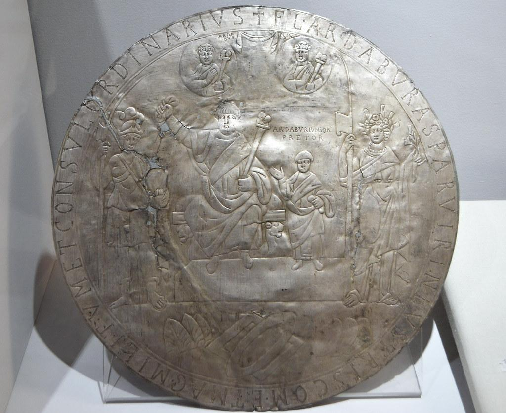

|
CC NUMISMATICS |
Close window | ||||||||
|
CC NUMISMATICS |
Close window | ||||||||
| AD 0476 - Byzantine Empire - Solidus - Zeno: | |||||||||
| Period: | Antiquity; Byzantine Empire (395-1453); Leonid dynasty (457-518) | ||||||||
| Ruler: | Zeno (474-475; 476-491) | ||||||||
| Type: | Regular issue | ||||||||
| Obverse: | |||||||||
|
Design: Bust of Zeno, facing slightly right, wearing a plumed, pearl-diademed helmet, cuirassed, holding a spear in the right hand, the spear extending behing the head, with a shield ornamented with a horseman spearing a fallen foe over the left shoulder Director: - Engraver: - |
|||||||||
| Reverse: | |||||||||
|
Design: Victoria (Roman goddess and personification of victory) standing left, holding a long jewelled cross in the right hand, with a star in the right field, the abbreviation "CONOB" (standing for "Cōnstantīnopolis obryzum", with "obryzum" the Latin word for "refined gold") below in exergue Director: - Engraver: - |
|||||||||
| Thoughts: | |||||||||
Rare in this condition |
|||||||||
| Edge: | Plain | ||||||||
| Alignment: | Variable (↺, 06h) | Technique: | Hammered | ||||||
| Rarity: | R2 | Material: | Gold | ||||||
| Year: | 476 (not dated) | Fineness: | 1000 | ||||||
| Country: | Byzantine Empire | Weight (g): | Measured: 4.46; Expected: 4.55 | ||||||
| Issuer: | Byzantine Empire | Shape: | Round (Irregular) | ||||||
| Value: | 1 | Diameter (mm): | Measured: 19; Expected: 22 | ||||||
| Unit: | Solidus (395-498) | Thickness (mm): | - | ||||||
| Mint: | Cōnstantīnopolis | Mintage: | |||||||
| Mint mark: | None | Emission period: | 476-491 | ||||||
| Status: | Ordered | Quality: | Circulating (demonetised) | ||||||
| Grade: | Ancients Ch AU; Strike: 5/5; Surface: 4/5 (NGC 6290599-057) | Variety: | Pearl diadem not jewelled | ||||||
| References: | RIC10#911; RCV5#21514; OCRE#http://numismatics.org/ocre/id/ric.10.zeno(2)_e.911; MRK#174.4; Fr#40 | ||||||||
| Varieties: | |||||||||
Many coins of the Byzantine Empire, up to the early part of the 8th century, bore an officina (workshop) mark indicating the particular division of the mint establishment that was responsible for the issue. These officina marks were in the form of Greek numerals (from 1 to 15: Α, Β, Γ, Δ, Ε, ↅ, Ζ, Η, θ, Ι, ΙΑ, ΙΒ, ΙΓ, ΙΔ, ΙΕ). Gold solidi and their fractions nearly always bore the mark of the responsible officina and it was generally located at the end of the reverse legend. For this coin, the officina mark at the end the reverse legend is Ι, indicating that the coin was struck in the 10th officina of the particular mint (here Constantinople). Three varieties varieties exist, for which the pearl diadem is not jewelled with a cross above it (the rarer; RIC10#912) or not (the less common; RIC10#911), or jewelled (the most common; RIC10#910). |
|||||||||
| Pedigree: | |||||||||
The CC Collection, acquired at Fritz Rudolf Künker GmbH & Co. KG eLive Auction 93 (Coins and Medals from Ancient, Medieval and Modern Times) - Day 1: Ancient coins on 20 July 2026 as Lot 514 (see https://kuenker.auex.de/en-us/auctions/lots/114963) Ex Heritage Auctions 2024 October 6 - 7 Hong Kong Autumn World Coins Showcase Auction #61407 (Signature® Internet Auction) on 6 October 2024, Lot 23062, Starting price: USD 1, Price realised: Hammer price: USD 1,300 + Buyer's premium (20%; minimum USD 29): USD 260 = USD 1,560 ~ GBP 1,193 (see https://coins.ha.com/itm/ancients/roman-imperial/ancients-zeno-eastern-roman-empire-ad-474-491-av-solidus-19mm-446-gm-6h-ngc-choice-au-5-5-4-5/a/61407-23062.s) |
|||||||||
| Monetary system: | |||||||||
The twin pivots of the Byzantine monetary system in the 5th and 6th centuries had been the gold solidus or nomisma and the copper nummus. The gold solidus was a coin struck 72 to the Roman pound and consequently weighing, in Greco-Roman units, 24 siliquae or carats. The weight of the Roman pound is normally reckoned at 327.45 g, giving the solidus a theoretical weight in modern terms of 4.55 g. The nummus, sometimes called by contemporaries a denarius, was a small coin of varying weight, usually about 1 g or a little less. It has then been reckoned as 1/7200 of the solidus, but its value in fact varied and seems frequently to have fallen to a much lower figure. The gap between the solidus and the nummus was bridged in part by real coins (the gold semissis and tremissis, fractions of the solidus, and the copper pentanummium, decanummium, half follis, and follis, multiples of the nummus), in part by a money of account, the keration, and in part by the miliaresion, which was sometimes one and sometimes the other. Treating them in descending order of value, the semissis and tremissis require no discussion. They were actual coins, worth one-half and one-third of a solidus, respectively. Miliaresion was a Greek loan word from the Latin "miliarense", a term applied to a silver coin current in the 4th century from the period of the Tetrarchy onward. In the 6th century, when no silver coinage was being struck for regular circulation in the East, it had become the generic name for any silver coin at all, being applied indifferently to the Roman denarius and to the Persian dirham. When the hexagram was created by the Byzantine emperor Heraclius (r. 610–641) this was known as the silver coin of six grammata, and when the hexagram ceased to be struck the term remained available for application to whatever silver coin would take its place.
The keration was not a coin, but primarily a unit of weight, 1/1728 of the Roman pound, 1/144 of the Roman ounce, or about 0.189 g in modern terms. Since the solidus was one-sixth of a Roman ounce, the solidus weighed 24 keratia. Consequently, as a money of account, the keration was 1/24 of the Roman solidus, a relationship that lasted throughout the whole of the Byzantine Empire's history. Keratia are omnipresent in Byzantine monetary reckonings, but they are always notional. A debt expressed in solidi, keratia, and fractions of keratia would be paid in solidi, miliaresia, folles, and such fractions of these as were in circulation at the time. The follis, sometimes called the obol, reintroduced in 498 with the monetary reform of the Byzantine emperor Anastasius I Dicorus (r. 491-518), was a copper coin worth forty nummi. Various fractions were struck during the 6th and 7th centuries, the half follis, decanummium, and pentanummium being the most important. In the mid 6th century the follis was reckoned 180 to the solidus. How the relationships between the solidus, keration, follis and nummus were affected by the "debasement" of the follis in the later 6th and 7th centuries – the gradual reduction of its weight to less than one-sixth of what it had been in the peak years of Justinian I's reign (527-565) – is a question to which there is not yet any answer. The nummus disappeared completely as a coin, but since the follis and its fractions still bore marks of value expressed as multiples of nummi, these were presumably still thought of as the lowest units in the monetary system. This monetary system was not as unified in the three and a half centuries between the accession of the Byzantine emperor Leo III (r. 717-741) in 717, marking the end of the "Twenty Years' Anarchy" (695-717), and the monetary reform of the Byzantine emperor Alexios I Komnenos (r. 1081-1118) in 1092, following his accession in 1081, marking the end of a prolonged period of civil war resulting from the defeat to the Seljuk Turks at Manzikert in 1071. The silver miliaresion introduced by Leo III in 720 and continued by his successors provided a certain element of unity nonetheless. The essential features of the monetary system during this period may be summarized as follows: Gold coinage – In the East, the semissis and tremissis ceased to be struck, save as ceremonial coins, toward the middle of the 8th century. Henceforward the only gold coin was the solidus. Its fineness remained virtually unchanged down to the 1030's, when debasement set in, and while its weight seems ot have declined very slightly the coin remained one theoretically struck 72 to the Roman pound. In the reign of Nikephoros II Phokas (r. 963-969), however, there began a series of experiments in light-weight nomismata comparable to the light-weight solidi of the 6th and 7th centuries. Of these the light-weight nomisma of 22 keratia, known as a tetarteron, finally gained the day, so that from the late 10th century down to Alexios I Komnenos' monetary reform of 1092 one has to distinguish between the full-weight nomisma histamenon and the light-weight nomisma tetarteron. Things went differently in the West. The solidus and tremissis continued to be struck in mainland Italy as long as the mints of Ravenna and Rome remained in Byzantine hands, i.e., to the mid and late 8th century, respectively. In Sicily they continued down to the reign of Basil I (r. 867-886), and there was even a revival of the use of the semissis in the early 9th century. The weight standard of the western gold coins, however, was substantially less than that of their eastern counterparts, and both on the mainland and in Sicily there was a serious reduction in fineness during the last decades of Byzantine rule. The fate of the fractional gold was related inversely to the presence or absence of a silver coinage, since the miliaresion flourished in the East but was not adopted in the West. Silver coinage – The history of the silver coinage is that of a new miliaresion, a coin much lighter than the hexagram of the 7th century, which was introduced by Leo III in 720. It lasted, with remarkably few changes in external appearance, down to Alexios I Komnenos' monetary reform of 1092. The weight, however, was several times altered, and in its final phase it was badly debased in both weight and fineness. Fractions were struck only under Leo III, of whose half miliaresion specimens are known, and in the middle of the 11th century. Over much of the period the miliaresion was valued as a double keration, i.e., as a coin worth 1/12 of a solidus, so that sums of money are as commonly expressed in terms of nomismata and miliaresia as of nomismata and keratia. But when this ratio became fixed, or how the value of the actual coins changed, in relation to the debased nomisma, during the last decades of their existence, are not known exactly. Copper Coinage – The evolution of the copper resembled that of the gold in that both underwent a process of drastic simplification and differed from it in that the weight of the follis altered greatly over the centuries. |
|||||||||
| Historical notes: | |||||||||
(Flavius) Zeno (born circa 425 at Rhusumblada in Isauria in south-west Anatolia; crown emperor on 29 January 474; died on 9 April 491 in Constantinople) (To the right) The missorium of Ardabur Aspar, a silver plate made by an anonym probably in Ravenna, Carthage or Rome circa 434, commissioned as a diplomatic gift to commemorate the western consulship of (Flavius Ardaburius) Aspar (circa 400-471) in 434, preserved in the Museo Archeologico Nazionale di Firenze, Italy. All around the outer edge of the dish, within a ring an inscription reads "FL· ARDABVR ASPAR VIR INLVSTRIS COM· ET MAG· MILITVM ET CONSVL ORDINARIVS". The knurl of the letters of the inscription indicates that they were decorated with niello. In addition to the relief, decorative elements are accomplished through finely applied chasing in the metal, thereby creating stippling to suggest folds and patterns on textiles, as well as subtle decorative elements such as bracelets. The central area of decoration shows on an elevated decorated platform the consul (Flavius Ardaburius) Aspar, seated on a cushioned throne with lion legs, and his elder son Ardabur (?-471) standing to his left, with the inscription "ARDABUR IVNIOR PRETOR" above his son. Aspar, bearded and wearing a tunic and a toga, holds up in his right hand a mappa, and in his left hand a sceptre surmounted by the busts of the two reigning emperors, Theodosius II (401-450; r. 402-450) and Valentinian III (419-455; r. 425-455). His son also wears a tunic and a toga, holds a mappa in his left hand, and salutes the consul with his right hand. Above them there are two medallions (imagines clipeatae) displaying the busts of his father Ardabur (?-?), consul in 427, and his relative (Flavius) Plinta, consul in 419, with adjoining inscriptions. Between them there is a curtain, indicating that the two men are already dead. Both deceased consuls also carry sceptres surmounted by the busts of the then reigning emperors. Aspar and his son Ardabur are flanked to the left by the Tyche of Rome and to the right by the Tyche of Constantinople, both of whom hold the fasces, and hence serve as the consul's lictors. Below the platform in exergue, three groups of objects are arrayed: to the left palm leaves, a reference to the games offered by Aspar to celebrate his consulship, to the right round shields, identified by the umbo or boss in their centre, often displayed as war spoils during games and a reference to vanquished foes, and in the centre two dishes, a rectangular tray and a circular plate, a reference to the gifts that Aspar was handing out at his games. (Flavius) Zeno was a native of Isauria, a mountainous region of south-west Anatolia whose inhabitants were regarded in Constantinople as warlike and uncivilised. Originally named Tarasis, son of Kodisas, or some other local form, he was born of a prominent family in the town of Rhusumblada circa 425. He came to Constantinople in 466 in possession of some treasonable correspondence between the Sasanid Persians and the commander-in-chief of the Byzantine Empire's armed forces in the praetorian prefecture of the East (magister militum per Orientem) Ardabur (?-471), the elder son of the general of a Germanic army in Roman service and kingmaker Patrician (Flavius Ardaburius) Aspar (circa 400-471) who placed on the throne Marcian (circa 392-457; r. 450-457) and Leo I (circa 401-474; r. 457-474). At this time Leo I, also called Leo the Thracian, was formulating a policy aimed at the gradual elimination of the overly powerful Germanic element in the military. He saw in the Isaurians an effective means of achieving this end by replacing the Germans with comparable soldiers native to the Roman Empire. As a reward for his loyalty Tarasis was betrothed to Leo's elder daughter (Aelia) Ariadne (circa 450-515). Just prior to the ceremony his somewhat uncouth Isaurian name was changed to Zeno, probably as a tribute to the distinguished Isaurian general of that name who had served under Theodosius II (401-450; r. 402-450). A son was born of this union in 467 and was named Leo (II; circa 467-474; r. 473-474) in honour of his grandfather. A bitter rivalry for imperial favour developed between the German and Isaurian elements in the military and Zeno's life was clearly in danger from Aspar and his son Ardabur. Zeno countered by influencing Leo I to have both Aspar and Ardabur executed on the charge of plotting against the imperial family. On the death of Leo I early in 474 he was succeeded by his grandson Leo II. Unfortunately the child was not in good health and it appeared unlikely that he would survive for long. Under these dangerous circumstances the widowed empress (Aelia) Verina (?-484) thought it advisable that Zeno should be crowned co-emperor by his son, the ceremony taking place on 9 February 474. Just over nine months later, on 17 November 474, the sickly Leo II expired and Zeno was left as sole emperor. However, Zeno was not well-liked in Constantinople and just 53 days after the commencement of his reign the rebellion of Basiliscus (?-476; r. 475-476) obliged Zeno to flee the capital and take refuge in his native Isauria. Here he remained throughout the period of Basiliscus' usurpation until circumstances had changed sufficiently to permit his return and the resumption of his rule. This was brought about by Basiliscus' growing unpopularity and by Zeno's ability to suborn the usurper's principal generals. These included (Favius) Armatus (?-477), the nephew of Basiliscus and reputed lover of Verina, who, in exchange for his support, demanded that his son (also named Basiliscus; ?-?) should be given the rank of Caesar under the restored Zeno. This promise was kept and is evidenced by the enigmatic coinage issued in the joint names of Zeno and Leo, the latter bearing the title "NOV CAES" (Nobilissimus Caesar). Basiliscus was obviously an unacceptable name for Zeno's junior colleague so the change to the dynastic name of Leo was clearly appropriate. However, the following year Armatus was murdered on the emperor's orders and his son was deposed from imperial office. His life was spared on the intervention of the empress Ariadne, to whom he was related, and he later became bishop of Cyzicus. Zeno's fifteen-year-long second reign was much troubled by usurpations and foreign wars. His relationship with his mother-in-law Verina was always stormy in the years following the usurpation of Basiliscus and she was even implicated in another uprising, that of the general Leontius (?-488) at Tarsus in 484. Her death followed shortly afterwards and Zeno permitted the return of her body to Constantinople for honourable burial. Zeno was a good soldier and was generally successful in his military campaigns. He survived until 11 April 491, his widow Ariadne then being called upon to select a successor, much as Pulcheria (398 or 399-453) had done in 450 following the death of Theodosius II. She sensibly chose the elderly palace official Anastasius (I Dicorus; circa 431-518; r. 491-518), who was about the same age as her late husband, and he ruled wisely and well until his own death in 518 at the advanced age of about eighty-seven. Ariadne herself predeceased him by three years. The coinage of Zeno is varied and complex and includes issues in the name of his wife Ariadne and a brief joint coinage naming the young Caesar Leo, son of Armatus. Some rare Constantinopolitan solidi and tremisses are assigned to the brief first reign on the evidence of the division of the title "PERP" in the obverse legend. On the majority of Zeno's coins from Constantinople this is shown undivided but on his earliest issues it appears as "P-ERP" (the latter form occurs also on western issues but in such cases it does not necessarily have the same chronological significance). Western coinage is much in evidence. With the overthrow in early September 476 of Romulus Augustus (circa 460-circa 511; r. 475-476), nicknamed Augustulus, son of the general and Patrician Orestes (before 433-476), by the Patrician (Flavius) Odovacar (433-493; r. 476-493), the whole Empire was now technically reunited under the rule of the eastern emperor, though the deposed Julius Nepos (?-480; r. 474-475) still remained a ruler in exile in Dalmatia until his murder in 480. Italian issues in Zeno's name were made by authority of Odovacar who had been proclaimed king of Italy by his barbarian troops, though he claimed to be acting as the subordinate of Zeno and was merely maintaining imperial rule in the peninsula in the absence of a separate western emperor. In 491 Odovacar was overthrown by the Patrican Theoderic the Great (circa 454-526; r. 493-526), who was king of the Ostrogoths since 471. Theoderic the Great also became regent of the Visigoths in 511. He came to a similar arrangement with Zeno, whereby he was recognised as the ruler of Italy on behalf of the emperor in Constantinople. During this confused transitional period in the West a remarkable series of large bronze coins of 40 nummi (mark of value "XL") were issued at Rome in Zeno's name. These anticipated the Empire-wide introduction by Zeno's successor, Anastasius I Dicorius, of an entire series of new bronze denominations, being various multiples of the bronze nummus. This significant reform, enacted in 498, is generally regarded by numismatists as the dividing line between the Roman and Byzantine series, though of course it related only to the bronze coinage and had no effect on the gold and silver denominations. |
 |
||||||||
| References: | |||||||||
| Album* | Album, S. 2011. Checklist of Islamic Coins, 3rd edition. Santa Rosa: Stephen Album Rare Coins. | ||||||||
| Babelon1* | Babelon, E. 1885. Description Historique et Chronologique des Monnaies de la République Romaine, Vulgairement Appelées Monnaies Consulaires, Tome Premier. Paris: C. Rollin & Feuardent. | ||||||||
| Babelon2* | Babelon, E. 1886. Description Historique et Chronologique des Monnaies de la République Romaine, Vulgairement Appelées Monnaies Consulaires, Tome Deuxième. Paris: C. Rollin & Feuardent. | ||||||||
| Balog* | Balog, P. 1964. The Coinage of the Mamlūk Sultans of Egypt and Syria. New York: The American Numismatic Society. | ||||||||
| Bastien | Bastien, P. 1976. Le Monnayage de l'Atelier de Lyon. De la Réouverture de l'Atelier par Aurélien à la Mort de Carin (Fin 274-mi-285). Wetteren: Éditions Numismatique Romaine. | ||||||||
| BCV* | Sear, D. R. 2006. Byzantine Coins and their Values, 2nd edition, revised and enlarged. London: Spink & Son, Ltd. | ||||||||
| Bernardi | Bernardi, G. 2010. Arabic Gold Coins, the First Essay of a Corpus from the First Issue 65H (Hegira Era) = 684C (Common Era) to the Beginning of the Buwayhid Domination 334H = 946C. Trieste: Giulio Bernardi. | ||||||||
| Blanchet1* | Blanchet, A. 1905. Traité des Monnaies Gauloises, Première Partie. Paris: Éditions Ernest Leroux. | ||||||||
| Blanchet2* | Blanchet, A. 1905. Traité des Monnaies Gauloises, Seconde Partie. Paris: Éditions Ernest Leroux. | ||||||||
| Boudeau | Boudeau, É. 2002. Boudeau II Féodales: Catalogue Général Illustré de Monnaies Provinciales. Paris: Éditions les Chevau-Légers. | ||||||||
| Bull | Bull, M. 2020. English Silver Coinage since 1649. London: Spink & Son, Ltd. | ||||||||
| C | Craig, W. D. 1976. Coins of the World, 1750-1850, 3rd edition. Racine: Western Publishing Company, Inc. | ||||||||
| Ciani | Ciani, L. 1926. Les Monnaies Royales Françaises de Hugues Capet à Louis XVI avec Indication de leur Valeur Actuelle. Paris: Jules Florange and Louis Ciani. | ||||||||
| Cohen1* | Cohen, H. 1880. Description Historique des Monnaies Frappées sous l'Empire Romain, Communément Appelées Médailles Impériales, Tome Premier, 2nd edition. Paris: C. Rollin & Feuardent. | ||||||||
| Cohen2* | Cohen, H. 1882. Description Historique des Monnaies Frappées sous l'Empire Romain, Communément Appelées Médailles Impériales, Tome Deuxième, 2nd edition. Paris: C. Rollin & Feuardent. | ||||||||
| Cohen3* | Cohen, H. 1883. Description Historique des Monnaies Frappées sous l'Empire Romain, Communément Appelées Médailles Impériales, Tome Troisième, 2nd edition. Paris: C. Rollin & Feuardent. | ||||||||
| Cohen4* | Cohen, H. 1884. Description Historique des Monnaies Frappées sous l'Empire Romain, Communément Appelées Médailles Impériales, Tome Quatrième, 2nd edition. Paris: C. Rollin & Feuardent. | ||||||||
| Cohen5* | Cohen, H. 1885. Description Historique des Monnaies Frappées sous l'Empire Romain, Communément Appelées Médailles Impériales, Tome Cinquième, 2nd edition. Paris: C. Rollin & Feuardent. | ||||||||
| Cohen6* | Cohen, H. 1886. Description Historique des Monnaies Frappées sous l'Empire Romain, Communément Appelées Médailles Impériales, Tome Sixième, 2nd edition. Paris: C. Rollin & Feuardent. | ||||||||
| Cohen7* | Cohen, H. 1888. Description Historique des Monnaies Frappées sous l'Empire Romain, Communément Appelées Médailles Impériales, Tome Septième, 2nd edition. Paris: C. Rollin & Feuardent. | ||||||||
| Cohen8* | Cohen, H. 1892. Description Historique des Monnaies Frappées sous l'Empire Romain, Communément Appelées Médailles Impériales, Tome Huitième, 2nd edition. Paris: C. Rollin & Feuardent. | ||||||||
| Conbrouse | Conbrouse, G. 1838. Description des Monnaies Royales de France, "Spécimen". Paris: H. Fournier & Cie. | ||||||||
| CRI | Sear, D. R. 1998. The History and Coinage of the Roman Imperators, 49-27 BC. London: Spink & Son, Ltd. | ||||||||
| CRR | Sydenham, E. A. and Forrer, L. S. 1952. The Coinage of the Roman Republic. London: Spink & Son, Ltd. | ||||||||
| CT | Churchill, R. and Thomas, B. 2012. The Brussels Hoard of 1908, The Long Cross Coinage of Henry III. London: A. H. Baldwin & Sons Ltd and The British Numismatic Society. | ||||||||
| Davies | Davies, P. J. 1982. British Silver Coins since 1816. Birmingham: Peter J. Davies. | ||||||||
| DeBelfort4* | de Belfort, A. 1894. Description Générale des Monnaies Mérovingiennes par Ordre Alphabétique des Ateliers, Tome IV : Monnaies Indéterminées – Supplément. Paris: Au Siège de la Société Française de Numismatique. | ||||||||
| DHJ | Hartill, D. 2011. Early Japanese Coins. London: New Generation Publishing. | ||||||||
| DOC1* | Bellinger, A. R. 1992. Catalogue of the Byzantine Coins in the Dumbarton Oaks Collection and in the Whittemore Collection, Volume 1: Anastasius I to Maurice, 491-602. Washington, D.C.: Dumbarton Oaks Research Library and Collection. | ||||||||
| DOC2_1* | Grierson, P. 1993. Catalogue of the Byzantine Coins in the Dumbarton Oaks Collection and in the Whittemore Collection, Volume 2, Part 1: Phocas and Heraclius, 602-641. Washington, D.C.: Dumbarton Oaks Research Library and Collection. | ||||||||
| DOC3_2* | Grierson, P. 1993. Catalogue of the Byzantine Coins in the Dumbarton Oaks Collection and in the Whittemore Collection, Volume 3, Part 2: Basil I to Nicephorus III, 867-1081. Washington, D.C.: Dumbarton Oaks Research Library and Collection. | ||||||||
| DLT* | de la Tour, H. 1892. Atlas de Monnaies Gauloises. Paris: E. Plon, Nourrit et Cie. | ||||||||
| DepeyrotCarol | Depeyrot, G. 2017. Le Numéraire Carolingien, Corpus des Monnaies, Quatrième édition augmentée. Wetteren: MONETA. | ||||||||
| DepeyrotCeltique5* | Depeyrot, G. 2005. Le Numéraire Celtique, V. Le Centre Parisien. Wetteren: MONETA. | ||||||||
| DT2 | Divo, J.-P. and Tobler, E. 1974. Die Münzen der Schweiz im 18. Jahrhundert. Zürich: Bank Leu & Co. AG and Luzern: Adolph Hesse AG. | ||||||||
| DT3 | Divo, J.-P. and Tobler, E. 1967. Die Münzen der Schweiz im 19. und 20. Jahrhundert. Zürich: Bank Leu & Co. AG and Luzern: Adolph Hesse AG. | ||||||||
| DyFeo1 | Duplessy, J. 2004. Les Monnaies Françaises Féodales, Tome I. Paris: Maison Platt. | ||||||||
| DyFeo2 | Duplessy, J. 2010. Les Monnaies Françaises Féodales, Tome II. Paris: Maison Platt. | ||||||||
| DyRoy1 | Duplessy, J. 1999. Les Monnaies Royales Françaises de Hugues Capet à Louis XVI (987-1793), Tome I : de Hugues Capet à Louis XII (987-1514). Paris: Maison Platt. | ||||||||
| DyRoy2 | Duplessy, J. 1999. Les Monnaies Royales Françaises de Hugues Capet à Louis XVI (987-1793), Tome II : de François Ier à Louis XVI (1515-1793). Paris: Maison Platt. | ||||||||
| D2* | Dieudonné, A. 1932. Catalogue des Monnaies Françaises de la Bibliothèque Nationale, Les Monnaies Capétiennes ou Royales Françaises, 2e Section (de Louis IX (saint Louis) à Louis XII). Paris: Éditions Ernest Leroux. | ||||||||
| F* | Cornu, J. 2022. Le Franc. Paris: Éditions les Chevau-Légers. Searchable at: https://www.lefranc.net. | ||||||||
| Fr* | Friedberg, A. L. and Friedberg, I. S. 2024. Gold Coins of the World: From Ancient Times to the Present. An Illustrated Standard Catalog with Valuations. Williston: Coin & Currency Institute. | ||||||||
| Gad | Pastrone, F. 2021. Monnaies Françaises, 1989-2021. Monaco: Éditions Victor Gadoury. | ||||||||
| GadEMP | Taillard, M. and Arnaud, M. 2014. Essais Monétaires & Piéforts Français, 1870-2001. Monaco: Éditions Victor Gadoury. | ||||||||
| GadRoy1 | Sombart, S. 2022. Monnaies Royales Françaises de Louis XI à Henri IV, 1461-1610. Monaco: Éditions Victor Gadoury. | ||||||||
| GadRoy2 | Pastrone, F. 2018. Monnaies Royales Françaises (de Louis XIII à Louis XVI), 1610-1792. Monaco: Éditions Victor Gadoury. | ||||||||
| Gariel2_1* | Gariel, E. 1884. Les Monnaies Royales de France sous la Race Carolingienne, Deuxième Partie. Strasbourg: Imprimerie Typographique de G. Fischbach. | ||||||||
| GCV1* | Sear, D. R. 1978. Greek Coins and their Values, Volume I, Europe. London: Seaby Publications Ltd. | ||||||||
| Giard | Giard, J.-B. 1983. Le Monnayage de l'Atelier de Lyon. Des Origines au Règne de Caligula (43 avant J.C.-41 après J.C.). Wetteren: Éditions Numismatique Romaine. | ||||||||
| HI* | Hahn, E. and Iklé-Steinlin, A. 1910-1911. Die Münzen der Stadt St. Gallen. Geneva: Société Suisse de Numismatique. | ||||||||
| HMZ2 | Richter, J. and Kunzmann, R. 2011. Neuer HMZ-Katalog, Band 2: Die Münzen der Schweiz und Liechtensteins 15./16. Jahrhundert bis Gegenwart. Regenstauf: Gietl Verlag. | ||||||||
| ICV1* | Wilkes, T. 2015. Islamic Coins and their Values, Volume 1, The Mediaeval Period. London: Spink & Son, Ltd. | ||||||||
| JNDA* | 日本貨幣商協同組合 (Japan Numismatic Dealers Association). 2008. 日本貨幣カタログ, The Catalog of Japanese Coins and Bank Notes. Tokyo: 日本貨幣商協同組合 (Japan Numismatic Dealers Association). | ||||||||
| KM* | Michael, T. and Schmidt, T. 2019. (Krause-Mishler) Standard Catalog of World Coins, 5 volumes (1601-1700, 1701-1800, 1801-1900, 1901-2000 and 2001-Date). Iola: Krause Publications. Searchable at: https://numismaster.com. | ||||||||
| Lafaurie | Lafaurie, J. 1951. Les Monnaies des Rois de France. Hugues Capet à Louis XII. Paris: Emile Bourgey (Paris) and Bâle: Monnaies et Médailles. | ||||||||
| Lohner* | Lohner, C. 1846. Die Münzen der Republik Bern. Zürich: Verlag von Meyer & Zeller. | ||||||||
| Marsh | Marsh, M. A. 2021. The Gold Sovereign Series. Exeter: Token Publishing. | ||||||||
| MBR | Sommer, A. U. 2023. Die Münzen des Byzantinischen Reiches, 491-1453, 2nd edition. Regenstauf: Battenberg. | ||||||||
| MCE | Spink & Son, Ltd. 1950. The Milled Coinage of England, 1662-1946. London: Spink & Son, Ltd. | ||||||||
| MEC1* | Grierson, P. and Blackburn, M. 2007. Medieval European Coinage, with a Catalogue of the Coins in the Fitzwilliam Museum. Cambridge, Volume 1: The Early Middle Ages (5th-10th Centuries). Cambridge: Cambridge University Press. | ||||||||
| MG | Morrison, K. F. and Grunthal, H. 1967. Carolingian Coinage. New York: The American Numismatic Society. | ||||||||
| MIB1 | Hahn, W. 1973. Moneta Imperii Byzantini, Rekonstruktion des Prägeaufbaues auf Synoptisch-tabellarischer Grundlage, Band 1: von Anastasius I. bis Justinianus I. (491-565), Einschließlich der Ostgotischen und Vandalischen Prägungen. Vienna: Verlag der Österreichischen Akademie der Wissenschaften. | ||||||||
| MIB2 | Hahn, W. 1973. Moneta Imperii Byzantini, Rekonstruktion des Prägeaufbaues auf Synoptisch-tabellarischer Grundlage, Band 2: von Justinus II. bis Phocas (565-610). Vienna: Verlag der Österreichischen Akademie der Wissenschaften. | ||||||||
| MIB3 | Hahn, W. 1981. Moneta Imperii Byzantini, Rekonstruktion des Prägeaufbaues auf Synoptisch-tabellarischer Grundlage, Band 3: von Heraclius bis Leo III./Alleinregierung (610-720), mit Nachträgen zum 1. und 2. Band. Vienna: Verlag der Österreichischen Akademie der Wissenschaften. | ||||||||
| Mitchiner1 | Mitchiner, M. 1998. The Coinage and History of Southern India, Part One, Karnataka - Andhra. London: Hawkins Publications. | ||||||||
| MNI3 | Mitchiner, M. 1979. Oriental Coins and their Values, Volume III, Non-Islamic States & Western Colonies, AD 600—1979. London: Hawkins Publications. | ||||||||
| MRK | Kampmann, U. 2022. Die Münzen der römischen Kaiserzeit, 4th edition. Regenstauf: Battenberg. | ||||||||
| NAMG2 | Délestrée, L.-P. and Tache, M. 2004. Nouvel Atlas des Monnaies Gauloises, II. de la Seine à la Loire Moyenne. Saint-Germain-en-Laye: Éditions Commios. | ||||||||
| Nicol* | Nicol, N. D. 2006. A Corpus of Fāṭimid Coins. Trieste: Giulio Bernardi. | ||||||||
| North1 | North, J. J. 2018. English Hammered Coinage Volume 1, Early Anglo-Saxon to Henry III c600-1272. London: Spink & Son, Ltd. | ||||||||
| North2 | North, J. J. 2018. English Hammered Coinage, Volume 2: Edward I to Charles II, 1272-1662. London: Spink & Son, Ltd. | ||||||||
| PA1* | Poey d'Avant, F. 1858. Monnaies Féodales de France, Premier Volume. Paris: C. Rollin. | ||||||||
| Probszt | Probszt-Ohstorff, G. 1959. Die Münzen Salzburgs. Bâle: Association Internationale des Numismates Professionnels. | ||||||||
| ProuCarol* | Prou, M. 1896. Catalogue des Monnaies Françaises de la Bibliothèque Nationale, Les Monnaies Carolingiennes. Paris: C. Rollin & Feuardent. | ||||||||
| ProuMerov* | Prou, M. 1892. Catalogue des Monnaies Françaises de la Bibliothèque Nationale, Les Monnaies Mérovingiennes. Paris: C. Rollin & Feuardent. | ||||||||
| Ranieri | Ranieri, E. 2006. La Monetazione di Ravenna Antica, dal V all' VIII Secolo, Impero Romano e Bizantino, Regno Ostrogoto e Langobardo. Bologna: Edizioni Numismatica Ranieri. | ||||||||
| RCV1* | Sear, D. R. 2000. Roman Coins and their Values, Volume I, The Republic and The Twelve Caesars, 280 BC-AD 96. London: Spink & Son, Ltd. | ||||||||
| RCV2* | Sear, D. R. 2002. Roman Coins and their Values, Volume II, The Accession of Nerva to the Overthrow of the Severan Dynasty, AD 96-AD 235. London: Spink & Son, Ltd. | ||||||||
| RCV3* | Sear, D. R. 2005. Roman Coins and their Values, Volume III, The 3rd Century Crisis and Recovery, AD 235-285. London: Spink & Son, Ltd. | ||||||||
| RCV4* | Sear, D. R. 2011. Roman Coins and their Values, Volume IV, The Tetrarchies and the Rise of the House of Constantine, AD 284-337. London: Spink & Son, Ltd. | ||||||||
| RCV5* | Sear, D. R. 2014. Roman Coins and their Values, Volume V, The Christian Empire: The Later Constantinian Dynasty and the Houses of Valentinian and Theodosius and their successors, Constantine II to Zeno, AD 337-491. London: Spink & Son, Ltd. | ||||||||
| RIC1* | Sutherland, C. H. V. and Carson, R. A. G. 1984. The Roman Imperial Coinage, Volume I, From 31 BC to AD 69 [Augustus–Vitellius], Revised edition. London: Spink & Son, Ltd. | ||||||||
| RIC2* | Mattingly, H. and Sydenham, E. A. 1926. The Roman Imperial Coinage, Vol. II, Vespasian to Hadrian. London: Spink & Son, Ltd. | ||||||||
| RIC3* | Mattingly, H. and Sydenham, E. A. 1930. The Roman Imperial Coinage, Vol. III, Antoninus Pius to Commodus. London: Spink & Son, Ltd. | ||||||||
| RIC4_1* | Mattingly, H. and Sydenham, E. A. 1936. The Roman Imperial Coinage, Vol. IV, Part I, Pertinax to Geta. London: Spink & Son, Ltd. | ||||||||
| RIC4_3* | Mattingly, H., Sydenham, E. A., and Sutherland, C. H. V. 1949. The Roman Imperial Coinage, Vol. IV, Part III, Gordian III–Uranius Antoninus. London: Spink & Son, Ltd. | ||||||||
| RIC5_2* | Webb, P. H. 1933. The Roman Imperial Coinage, Vol. V, Part II, [Probus to Diocletian]. London: Spink & Son, Ltd. | ||||||||
| RIC7* | Bruun, P. M. 1966. The Roman Imperial Coinage, Vol. VII, Constantine and Licinius, AD 313-337. London: Spink & Son, Ltd. | ||||||||
| RIC9* | Pearce, J. W. E. 1951. The Roman Imperial Coinage, Vol. IX, Valentinian I–Theodosius I. London: Spink & Son, Ltd. | ||||||||
| RIC10* | Kent, J. P. C. 1994. The Roman Imperial Coinage, Volume X, The Divided Empire and the Fall of the Western Parts, AD 395-491. London: Spink & Son, Ltd. | ||||||||
| RIG4 | Colbert de Beaulieu, J.-B. and Fischer, B. 2022. Recueil des Inscriptions Gauloises (R.I.G.), Volume IV, Les Légendes Monétaires. Paris: CNRS Éditions. | ||||||||
| Roberts | Roberts, J. N. 1996. The Silver Coins of Medieval France (476-1610 AD). South Salem, New York: Attic Books, Ltd. | ||||||||
| RRC1* | Crawford, M. H. 1974. Roman Republican Coinage, Volume I. Cambridge: Cambridge University Press. | ||||||||
| RSC1* | Seaby, H. A. 1978. Roman Silver Coins, Volume I, The Republic to Augustus, 3rd (revised) edition. London: Seaby Publications Ltd. | ||||||||
| RSC2* | Seaby, H. A. 1979. Roman Silver Coins, Volume II, Tiberius to Commodus, 3rd (revised) edition. London: Seaby Publications Ltd. | ||||||||
| RSC3* | Seaby, H. A. 1982. Roman Silver Coins, Vol. III, Pertinax to Balbinus and Pupienus, 2nd (revised) edition. London: Seaby Publications Ltd. | ||||||||
| RSC4* | Seaby, H. A. 1982. Roman Silver Coins, Vol. IV, Gordian III to Postumus, 2nd (revised) edition. London: B. A. Seaby Ltd. | ||||||||
| RSC5* | King, C. E. 1987. Roman Silver Coins, Vol. V, Carausius to Romulus Augustus. London: Seaby Publications Ltd. | ||||||||
| S1* | Howard, E. 2022. Standard Catalogue of British Coins, Coins of England & the United Kingdom, Pre-decimal Issues, 58th edition, 2023. London: Spink & Son, Ltd. | ||||||||
| SR2 | Fletcher, D. 2024. Standard Catalogue of British Coins, Coins of England & the United Kingdom, Decimal Issues, 11th edition, 2025. London: Sovereign Rarities Limited. | ||||||||
| Unger2* | Unger, E. 2000. Magyar Éremhatározó II. Kötet (1526-1740). Budapest: Ajtósi Dürer Könyvkiadó. | ||||||||
| Zöttl | Zöttl, H. 2008. Salzburg Münzen und Medaillen 1500–1810, Band 1. Salzburg: Verlag Frühwald. | ||||||||
| *Available in electronic format and/or digitised format. | |||||||||